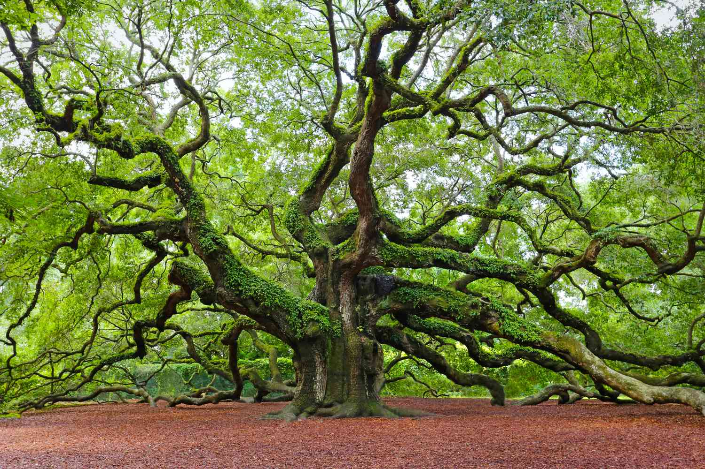

Trees
In this Article we have discussed about 5 Different Trees, Which are mentioned below ↓
Mangifera indica, commonly known as Mango Tree, is a species of flowering plant in the family Anacardiaceae. It is a large fruit tree, capable of growing to a height of 30 metres (100 feet). There are two distinct genetic populations in modern mangoes - the "Indian type" and the "Southeast Asian type".

An Oak is a tree or shrub in the genus Quercus of the beech family, Fagaceae. There are approximately 500 extant species of oaks. The common name "oak" also appears in the names of species in related genera, notably Lithocarpus (stone oaks), as well as in those of unrelated species such as Grevillea robusta (silky oaks) and the Casuarinaceae (she-oaks). The genus Quercus is native to the Northern Hemisphere and includes deciduous and evergreen species extending from cool temperate to tropical latitudes in the Americas, Asia, Europe, and North Africa. North America has the largest number of oak species, with approximately 160 species in Mexico, of which 109 are endemic and about 90 in the United States. The second greatest area of oak diversity is China, with approximately 100 species.
A Pine is any conifer tree or shrub in the genus Pinus of the family Pinaceae. Pinus is the sole genus in the subfamily Pinoideae. The World Flora Online created by the Royal Botanic Gardens, Kew and Missouri Botanical Garden accepts 187 species names of pines as current, together with more synonyms.[The American Conifer Society (ACS) and the Royal Horticultural Society accept 121 species. Pines are commonly found in the Northern Hemisphere. Pine may also refer to the lumber derived from pine trees; it is one of the more extensively used types of lumber. The pine family is the largest conifer family and there are currently 818 named cultivars (or trinomials) recognized by the ACS.


Tamarind is a leguminous tree bearing edible fruit that is indigenous to tropical Africa and naturalized in Asia. The genus Tamarindus is monotypic, meaning that it contains only this species. It belongs to the family Fabaceae. The tamarind tree produces brown, pod-like fruits that contain a sweet, tangy pulp, which is used in cuisines around the world. The pulp is also used in traditional medicine and as a metal polish. The tree's wood can be used for woodworking and tamarind seed oil can be extracted from the seeds. Tamarind's tender young leaves are used in South Indian and Filipino cuisine. Because tamarind has multiple uses, it is cultivated around the world in tropical and subtropical zones.
Acer is a genus of trees and shrubs commonly known as Maples. The genus is placed in the family Sapindaceae. There are approximately 132 species, most of which are native to Asia, with a number also appearing in Europe, northern Africa, and North America. Only one species, Acer laurinum, extends to the Southern Hemisphere. The type species of the genus is the sycamore maple, Acer pseudoplatanus, the most common maple species in Europe. Maples usually have easily recognizable palmate leaves (Acer negundo is an exception) and distinctive winged fruits. The closest relatives of the maples are the horse chestnuts. Maple syrup is made from the sap of some maple species. It is one of the most common genera of trees in Asia. Many maple species are grown in gardens where they are valued for their autumn colour.